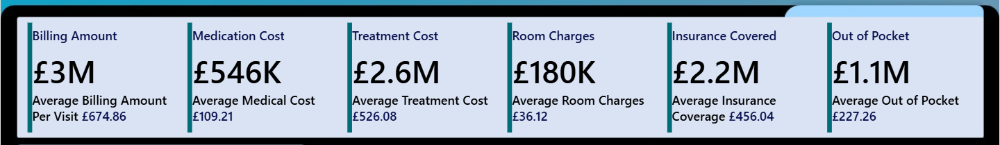
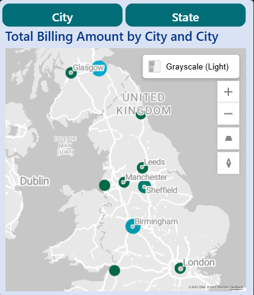
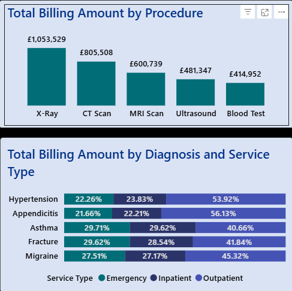
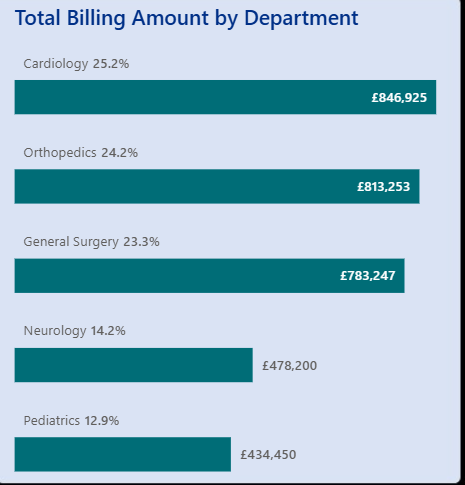
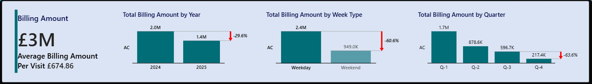
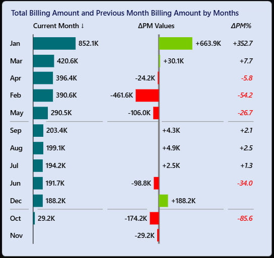
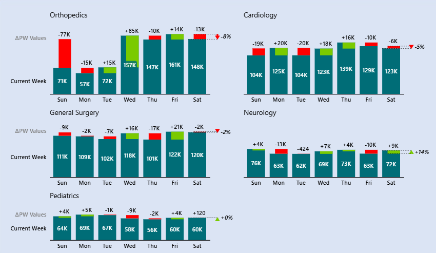
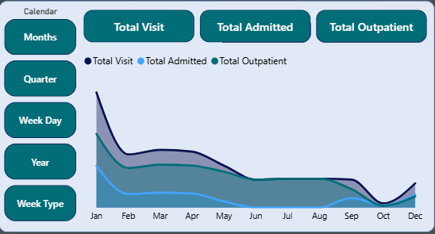
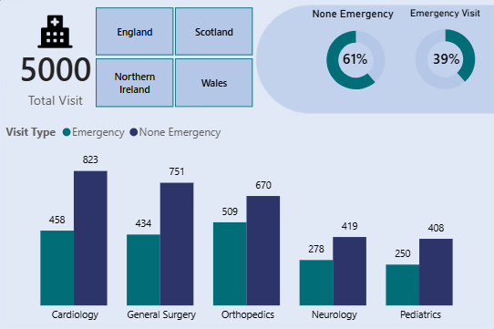

Dashboard Highlights


Medical Metrics Details, Trends, and Provider Analysis
As a seasoned analyst with a passion for unravelling data’s hidden tales, I dive into the intricate world of medical metrics. The first image, a snapshot of Medical Metrics Details, shows us a billing amount of £3M, treatment costs of £2.6M, and a geographic spread from Glasgow to London, where procedures such as X-ray, MRI scan, and blood tests, along with diagnoses like hypertension, weave a financial tapestry. Medical Metrics Trend reveals a dynamic narrative: billing amounts fluctuate with a £3M average per visit at £674.86, dipping by 29.6% year-over-year, and weekday patterns differ from weekend patterns. Departmental insights show Orthopaedics and Cardiology leading the charge, with nuanced weekday patterns. The third, Medical Metrics Provider, highlights a dedicated workforce of 1,232 admitted patients and 3,768 outpatients, where providers like Dr. Emma Jones (4.85 rating) and Dr. Sade Kikiola (2.35 rating) drive a 61% non-emergency visit rate and a 39% emergency rate. Together, these metrics form a thrilling saga of resilience and adaptation, where every number tells a story of care, efficiency, and the relentless pursuit of balance in a rapidly evolving system.
What is Medical Metrcis?
Medical Metrics is a forward-thinking healthcare analytics company established to revolutionise the industry by harnessing data to drive better outcomes. It specialises in collecting and analysing key metrics such as billing amounts, treatment costs, and provider efficiency across the UK. By transforming complex data into clear, actionable insights, Medical Metrics empowers hospitals, clinics, and healthcare providers to optimise financial performance, improve patient care, and adapt to evolving trends, all while supporting a more efficient and responsive healthcare system.
Project Objectives
The project objective is to conduct a thorough analysis of the financial performance, including identifying key performance indicators (KPIs) and significant trends, while also assessing the performance and efficiency of healthcare providers to derive actionable insights from the dataset. Additionally, the project aims to develop a comprehensive, interactive, and user-friendly dashboard, featuring a Financial Overview, Provider Insights, and Trend Analysis, utilising appropriate visualisations to communicate findings to stakeholders clearly.
Data Dictionary
The data dictionary includes eight datasets: Cities, Departments, Diagnoses, Insurance, Patients, Procedures, Providers, and Visits.
- Cities - This dataset contains information about various cities, with each record consisting of three main columns: City ID, City, and State. The City ID is a unique numerical identifier assigned to each city to ensure distinct referencing within the database. The City column provides the name of the city, while the State column indicates the broader region, such as a state or province, where the city is located.
- Departments - This consists of two columns: Department ID and Department. The Department ID is a unique numerical identifier used to distinguish each department in the system. The Department column contains the name of the department, such as General Surgery.
- Diagnoses - This dataset includes two columns: Diagnosis ID and Diagnosis. The Diagnosis ID is a unique numerical code assigned to each medical condition for identification reference purposes. The Diagnosis column contains the name of the condition, such as Appendicitis.
- Insurance - This contains Insurance providers associated with patient coverage. It includes two columns: Insurance ID and Insurance Provider. The Insurance ID is a unique numerical identifier assigned to each insurance provider, ensuring accurate referencing across the database. The Insurance Provider column lists the name of the insurance company.
- Patients - This contains demographic and geographic information about individuals receiving medical care. Each record includes a Patient ID, which uniquely identifies each patient, along with their Patient Name, Gender, and Age. The City ID links to the Cities dataset, indicating the city of residence for each patient, while the Race column captures the patient's racial or ethnic background.
- Procedures - The Procedures dataset lists medical procedures performed during patient care. The Procedure ID is a unique numerical identifier assigned to each procedure, ensuring consistent referencing across related datasets. The Procedure column specifies the name of the medical procedure.
- Providers - The Providers dataset contains information about healthcare professionals who deliver medical services. It includes the following columns: Provider ID, a unique numerical identifier for each provider; Provider Name, which records the full name of the healthcare professional (e.g., Dr. Olu Abisola); Gender and Age, which provide demographic details; and Nationality, which indicates the provider’s country of origin (e.g., Nigerian).
- Visits - The Visits dataset records detailed information about each patient’s healthcare encounter, including the Date of Visit and identifiers such as Patient ID, Provider ID, Department ID, Diagnosis ID, Procedure ID, and Insurance ID, which link to their respective datasets. It captures the Service Type (e.g., outpatient), Treatment Cost, and Medication Cost, along with the Follow-Up Visit Date and Patient Satisfaction Score to track patient outcomes. Additional fields include Referral Source, whether the visit was an Emergency, and the Payment Status. For inpatient visits, the dataset also records Admitted Date, Discharge Date, Room Type, Insurance Coverage, and Room Charges (daily rate).
Discovering Key Findings
Imagine stepping into the vibrant healthcare landscape of the United Kingdom, where the heartbeat of a bustling medical system pulses through the numbers of the Medical Metrics Dashboard. This journey begins with a financial snapshot: a total billing amount of £3M, with an average of £674.86 per visit, signalling the economic engine driving care delivery. Additionally, medication costs £546,000 (£109.21 on average), while treatment costs reach £2.6 million (£526.08 on average). Room charges total £ 180,000 (£36.12 on average), while insurance covers £2.2 million (£456.04 per case), leaving £1.1 million (£227.26) as out-of-pocket expenses.
Why does this matter? These figures lay the foundation for understanding the financial health of the healthcare centre, revealing the delicate balance between revenue, operational costs, and patient affordability, a story of sustainability in action.
As we delve deeper, the dashboard unfolds a rich tapestry of regional and procedural insights. The map highlights cities such as Glasgow, Leeds, Manchester, Sheffield, Birmingham, and London, where total billing varies, reflecting the diverse economic demands across the UK.  Why? It shows where resources are concentrated and identifies potential gaps.
Procedures tell their own tale: X-rays lead at £1,053,529, followed by CT Scans (£805,508), MRI Scans (£600,739), Ultrasounds (£481,347), and Blood Tests (£414,952), hinting at the diagnostic backbone supporting patient care, diagnoses such as Hypertension (22.26% Emergency, 23.83% Inpatient, 53.92% Outpatient). 
And departments like Cardiology (25.2%, £846,925) and Orthopaedics (24.2%, £813,253) dominate, revealing why certain areas require more investment and efficiency. The insight here? The data suggests a system that leans heavily on advanced diagnostics and specialised care, indicating a need to optimise resource allocation to maintain balance. 
General Surgery (£783,247, 23.3%) and Neurology (£478,200, 14.2%) round out the departmental narrative, while Paediatrics (£434,450, 12.9%) hints at a growing focus on younger patients—why? This reflects a strategic shift toward comprehensive care across age groups. The meaning behind these numbers is clear: the healthcare centre thrives on a diverse revenue stream but faces challenges in managing out-of-pocket costs, which could impact patient access. The insight? Stakeholders should consider enhancing insurance coverage strategies and exploring cost efficiencies in high-volume procedures to ensure long-term financial stability and equitable care, turning data into a roadmap for a healthier future.
Medical Metrics Trend
As the curtains rise on the Medical Metrics Trend dashboard, a window into the evolving financial pulse of a UK healthcare centre opens. The story starts with a bold figure: a £3M billing amount, averaging £674.86 per visit, setting the stage for a financial narrative that drives patient care. Year-over-year, total billing dips from £2M in 2024 to £1.4M in 2025, a 29.6% decline, while weekdays yield £2.4M compared to £949K on weekends (a 60.6% drop), and quarterly totals fall from £1.7M in Q1 to £217K in Q4 (a 63.6% decrease).  Why does this matter? These numbers reveal the economic heartbeat, highlighting seasonal and weekly fluctuations that challenge the center’s revenue stability and prompt a quest for understanding underlying causes.
As the tale unfolds, monthly billing variations paint a vivid picture: January peaks at £852.1K, plummeting to £29.2K in November, with shifts like a £188.2K surge in December and a £174.2K drop in October—why? These swings, marked by ±APM values (e.g., +663.9K in January, -461.6K in February), reflect the ebb and flow of patient demand and operational efficiency. 
Departmental insights deepen the narrative: Orthopaedics sees weekday highs of £148K, Cardiology fluctuates between £10.4K and £139K, General Surgery ranges from £111K to £120K, and Neurology from £63K to £97K, with Paediatrics holding steady at £60K to £69K. The ±APW values (e.g., +13K for Orthopaedics on Tuesday, -7 K for Cardiology on Sunday) suggest why some days thrive while others falter; specialised care and scheduling play key roles.
The insight? This data reveals a system sensitive to time-based trends, suggesting a closer examination of staffing and resource allocation to mitigate these peaks and troughs. As the story reaches its climax, the analysis delivers its revelations. The consistent decline across quarters and week types signals a potential need for strategic intervention. Why? It hints at external factors, such as reduced patient visits or policy shifts, that may impact revenue. The meaning behind the numbers is a call to action: the healthcare centre must adapt to maintain financial health amidst these downturns. The insight? Stakeholders should explore boosting weekend services, analysing seasonal drivers, and optimising departmental schedules to reverse the downward trend, turning this financial saga into a roadmap for resilience and growth in the face of change.
Medical Metrics Providers
As the Medical Metrics Provider dashboard opens a new chapter in the story of a UK healthcare centre’s human heart, the journey begins with a striking tally: 5,000 total visits, 1,232 patients admitted, and 3,768 outpatients, painting a picture of a bustling facility serving diverse needs.
Lengths of stay are as follows: 430 stays of 2-4 days, 409 for 5-7 days, 247 for 8+ days, and 146 for 1 day. Visit types are split, with 39% emergency and 61% non-emergency cases. Why? These figures establish the scale of care delivery, reflecting the centre’s role as a lifeline and the importance of understanding patient flow to optimise resources. As the odyssey progresses, the dashboard reveals the rhythm of care across time and speciality.
The trend line dips from January to December, with visits peaking early and stabilizing later. Why? This suggests seasonal demand shifts, possibly tied to illness patterns or policy changes, with ± values hinting at operational adjustments. 
Providers shine through: Dr. Emma Jones leads with a 4.85 rating, followed by Dr. Johnson Greg at 5.05, Dr. Olu Abisola at 5.45, Dr. Ravi Patel at 3.36, and Dr. Sade Kiikola at 2.35, managing a total of 1,232 admissions.

Departmental visits, including Cardiology (458), General Surgery (434), Orthopaedics (509), Neurology (419), Paediatrics (408), and regional data (England, Scotland, Northern Ireland, and Wales), show why some areas thrive. Specialised expertise and geographic access drive performance. 
The insight? The data highlights a skilled workforce facing variable demand, suggesting a need to align provider schedules with peak periods. As the journey concludes, the dashboard offers its final beacon. The balanced visit types (61% non-emergency, 39% emergency) and diverse provider ratings signal a system striving for consistency.Why? It reflects a commitment to quality care amid fluctuating workloads. The meaning behind these numbers is a testament to the centre’s adaptability; however, the lower ratings (e.g., 2.35) and seasonal dips suggest room for improvement. The insight? Stakeholders should invest in training for underperforming providers, enhance emergency capacity, and analyse seasonal trends to ensure a robust, patient-centred future, turning this odyssey into a guide for sustained excellence.